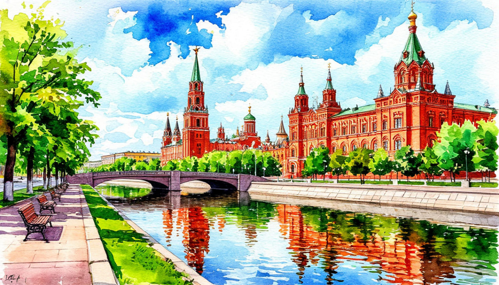

Магия Волжской земли

Даты тура: 30 апреля - 4 мая | 11 - 15 июня | 9 - 13 июля | 23 - 27 июля | 6 - 10 августа | 20 - 24 августа
Стоимость тура:
- 25 700 р. - взрослый
- 25 600 р. - пенсионеры/студенты/школьники
- 31 900 р./чел - одноместное размещение
По программе:
- - Обзорная экскурсия по Казани
- - Экскурсия по территории Кремля, мечеть Кул-Шариф
- - Экскурсия по Йошкар-Оле
- - Царевококшайский Кремль
- - Экскурсия в Национальную Художественную галерею с мастер-классом по росписи
- - Знакомство с марийским гуслями
- - Экскурсия в Чувашский национальный музей
- - Программа с чувашскими песнями
Программа тура:
1 день:
- 18-00- выезд из Костромы от ТРЦ "РИО" (Ул. Магистральная, 20), правый угол от центрального входа
2 день:
- Прибытие в Казань
- Завтрак в кафе города.
- Обзорная экскурсия по городу. Вы отправитесь в увлекательное путешествие по историческим местам Казани. Во время этой экскурсии Вы сможете насладиться самобытной красотой столицы Татарстана, увидеть своими глазами яркие краски ее улиц и площадей, узнать, где хранятся несметные сокровища Казанских ханов и где закипел без огня котел. Прикоснитесь к вековой истории древнего города.
- В ходе экскурсии вы посетите:
- - Богородицкий монастырь, где хранится чудотворная икона Казанской Божией Матери;
- - Петропавловский собор – ценнейший архитектурный памятник и один из духовных символов Казани;
- - Смотровую площадку Казанского Кремля, с которой открываются фантастически красивые виды на Казань: вид на реку Казанку, Центр семьи «Kazan», Дворец Земледельцев, Кремлёвскую набережную, аквапарк «Ривьера», спортивные объекты, построенные к Универсиаде – 2013 и современные постройки;
- - Набережную озера Кабан – прекрасную прогулочную зону.
- Обед в кафе города с мастер - классом. Приглашаем на кулинарный мастер-класс по изготовлению татарского десерта - чак-чака! Вы научитесь приготовлению этого восточного лакомства.
- Пешеходная экскурсия в Казанский Кремль с посещением мечети Кул-Шариф, Благовещенского Собора, с осмотром падающей башни правительницы Казанского ханства Сююмбике, Пушечного двора, площади Первого Мая.
- Переезд в Йошкар-Олу
- Размещение в отеле
3 день:
- Завтрак в отеле
- Обзорная автобусно-пешеходная экскурсия по Йошкар-Оле - столице Республики Марий Эл и единственному городу России на букву «Й». Вы увидите эклектичное сочетание разнообразных стилей и эпох, прогуляетесь по самым красивым площадям и улицам города, сфотографируетесь на фоне набережной Брюгге, побываете в самом молодом Кремле России, а также загадаете желание у Йошкиного кота — любимца туристов и, кроме того, увидите динамическую скульптуру «Вход Господень в Иерусалим», аналогов которой в России не существует.
- Посещение Царевококшайского Кремля, построенного в 2009 году с красивой часовней и макетами пушек, Республиканский театр кукол – настоящий средневековый замок, который производит впечатление сказочного миража.
- Обед в кафе города с программой. Вас ждет выступление национального коллектива с песнями и танцами. Будет интересно
- Посещение Национальной Художественной галереи с мастер-классом по росписи значка.
- Современная выставка, на которой представлены лучшие работы музеев республики, где вы узнаете много интересного об искусстве марийского народа и края. С первой минуты погрузитесь в атмосферу тайны. Световые проекции и оригинальные инсталляции дома, очага, священной рощи сопровождаются звуками плача ребенка, шумом леса, все это дает возможность прочувствовать традиционную культуру народа мари и стать ее участником.
- Знакомство с марийским гуслями (кюсле или керш).
- Гусли — традиционный марийский инструмент, на котором много веков играли только мужчины. Существует легенда, как марийский князь Акпарс помогал Ивану Грозному брать Казань при помощи игры на гуслях. Со временем, играть на гуслях стали только женщины. Девушка не могла выйти замуж, пока не научится играть на этом музыкальном инструменте.
- Возвращение в отель
- Свободное время.
4 день:
- Завтрак в отеле
- Переезд в Чебоксары
- Обзорная экскурсия по городу.
- Вас ждет захватывающая обзорная экскурсия, где вы сможете увидеть столицу республики во всей красе, открыть для себя удивительные факты из ее истории, полюбоваться потрясающими видами города из окон автобуса и с лучших смотровых площадок.
- - Вы побываете в сквере имени Василия Ивановича Чапаева и узнаете, при каких обстоятельствах историческая родина обрела своего сына-героя;
- - посетите Парк Победы и музей военной техники под открытым небом;
- - прогуляетесь по исторической части города, где сконцентрированы основные историко-архитектурные памятники Чебоксар, где факты и легенды причудливо переплетаются в полотно истории и завораживают каждого, кто с ними соприкасается.
- Экскурсия в Чувашский национальный музей. Посетив музей, вы узнаете историю становления Волжской Булгарии, в состав которой раньше входила Чувашия.
- Обед в кафе с национальной музыкальной программой.
- Свободное время.
- Выезд из города
5 день:
Прибытие в Кострому в первой половине дня (ориентировочно)
В стоимость тура входит:
- - проживание в гостинице*
- * отель "Эврика" 3* (Номер реестровой записи: С162024019248)
- - питание: 3 завтрака + 3 обеда
- - услуги гида-экскурсовода
- - экскурсионная программа
- - автобусное обслуживание по программе тура
- Для бронирования необходимы данные паспорта РФ и свидетельства о рождении, если с вами путешествуют дети
- Предоплата – 50% от стоимости тура. Остаток за 30 дней до даты выезда.
- Любой тур можно оформить не выходя из дома. Подробнее: Тут
Стоимость тура не зафиксированы и могут быть изменены в большую или меньшую сторону в зависимости от уровня спроса в любой момент.
Время начала экскурсий и их порядок указано ориентировочно.
Фирма-исполнитель оставляет за собой право замены экскурсий без уменьшения общего объема экскурсионной программы.
По вопросам бронирования обращайтесь: